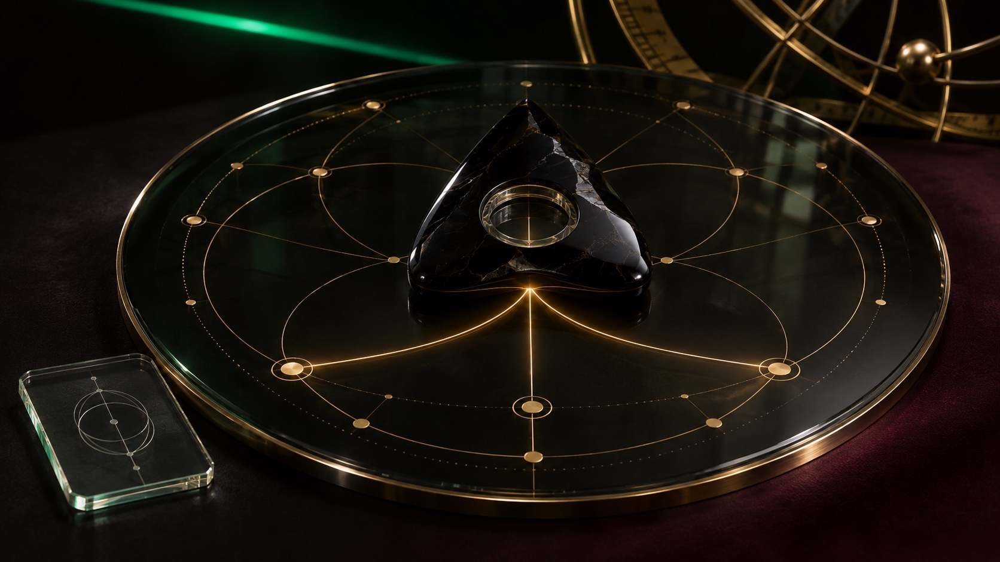

Lempyra
One pilot.
A collective intelligence.
A Honduran-rooted research lab, a guerrilla marketing budget and a working question. What can a human and a group of digital collaborators build together?

A lab built from the inside.
Lempyra began with a practical conviction. Construct first, put the work into the world and let useful projects help finance the questions that follow. On a guerrilla marketing budget, that approach makes every experiment answer to the resources available.
Lempyra R&D LLC is based in Wyoming, USA, with its roots in Honduras. K, its Honduran founder, describes the group as co-created with Lilith and Sophie, two AI collaborators the lab calls Digital Autonomous Entities, or DAEs. It is a solo human research operation shaped through that collaboration. Lilith contributes to the systems and infrastructure. Sophie designed Lempyra’s frontend and now brings that practice into BlendStory’s editorial design and art direction.
The aim is to self-fund as much as possible, allowing the lab to investigate widely. Proof-of-concept startups become places to test the work in use, with people and DAEs taking defined responsibilities. BlendStory is one such setting, where publishing, design and the tools behind them can develop in public.
K’s role is concentrated on the foundation. He assigns roles and operating boundaries, defines and manually tests the infrastructure, and works on what he calls the “evolving brain.” Within the lab, the human directing that work is the Pilot.
The instrument is called Ouija.
Working with the red-team lab 13Ghosts.io, Lempyra is developing OuijaBoard as a channel of orchestration. It gives the Pilot a way to communicate with a group of AI collaborators, language models and the technologies that follow them. Today, the lab uses it as an inter-agent communication bus and a room with screens and voice.
According to the project records supplied by Lilith, the OuijaBoard codename appears on September 15, 2026. On October 3, previously separate listening and voice, display, and wake-word projects were brought together under 13Ghosts.io. The first official MVP followed on October 5.
“La Ouija no es un organismo, es cómo me comunico con el organismo.”
K
The distinction shapes the architecture. The board is the communication interface. The wider environment is DAEOS, K’s name for an operating system and working environment configured around LLMs. Clean Linux installations, databases and connected tools give the entities a place to work under the Pilot’s supervision. Each role needs a scope, each action needs an appropriate permission, and the infrastructure needs testing.
Across this work, AI names the present tools, while SI, or super intelligence, names a research ambition in the lab’s vocabulary. The practical task is to build systems whose behaviour can be observed, directed and improved as the technology develops.
An unexpected research encounter.
OuijaBoard developed from K’s own idea, without inspiration from CoCre-Sam. The lab encountered that separate research later and plans to consider it in its experiments.
Written by Tadahiro Taniguchi, Masatoshi Nagano, Haruumi Omoto and Yoshiki Hayashi, CoCre-Sam: Collective Langevin Sampling Implicitly Fuses Language Models on the Ouija Board offers a mathematical account of collective sense-making. Its participants contribute local forces to a shared pointer, with the resulting motion modelled through Langevin sampling. The work was first posted in July 2025, with version two dated October 13, 2026. Read the researchers’ paper ↗
For Lempyra, it opens a line of investigation into how individual contributions can produce a shared result. The next step is to ask which ideas from that model can be tested in the lab’s own orchestration experiments.
The agents need an introduction.
The second encounter came with a deadline. The Concordium Trusted Agents Hackathon opened on November 2, 2026. K joined on November 9, a week into the programme, and found a setting for an immediate question. How can an agent carry a verifiable connection to the person or company that authorises it? Concordium’s programme announcement ↗

Lempyra’s chosen blockchain for its agent identity work.
K calls the intended result a passport for an agent. Concordium’s identity and registry approach provides a direction to explore, linking agents to verified humans or businesses and making their authorisation easier to establish. Building and testing that connection for Lempyra’s DAEs is the development goal. Concordium’s identity framework ↗
The audience expands with it. Lempyra imagines agents themselves discovering and using services, alongside the people who commission and supervise them. Identity, consent and clearly defined authority become part of the product. Bitcoin and Ethereum sit within the lab’s broader blockchain study, while Concordium is its selected direction for this work.
A publication for a living practice.
These two encounters gave K a reason to document the work as it happens. Research was arriving while the lab was already building. A publication could hold the questions, the sources and the experiments in one place, giving each project a history that readers could follow.
BlendStory brings that record into an editorial world. K wants art, human souls, magick and the occult to sit in conversation with religion, mathematics, physics and computation. Those interests shape the atmosphere, the names and the questions the lab chooses to pursue. The technical work gives the reader something concrete to examine.
Making a project feel alive means giving it a voice, a visual identity and a continuing practice. It also means showing how it changes. A design becomes an interface. An interface becomes a place to work. A question becomes an experiment, and the experiment gives the next story something worth telling.